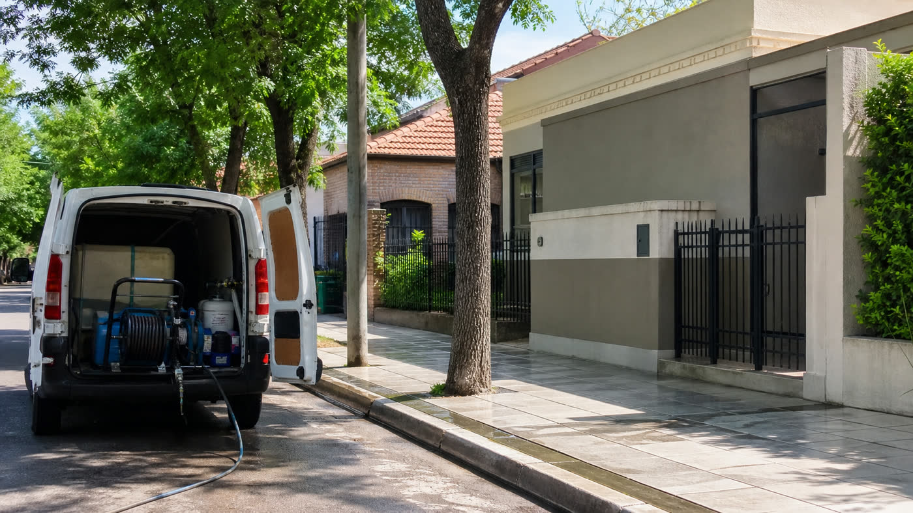

Resumen: la base de trabajo está en San Martín y alrededores. Para localidades cercanas, conviene confirmar cobertura, traslado y disponibilidad antes de coordinar.

Por qué conviene aclarar la zona desde el primer mensaje
Muchas consultas dependen del traslado y de la disponibilidad. No es lo mismo un trabajo cerca de San Martín que una casa más alejada, especialmente si se trata de una limpieza chica o de una visita urgente.
Cuando mandás localidad, barrio y fotos, se puede responder mejor si el servicio conviene coordinarlo, si necesita jornada completa o si se puede sumar a otro recorrido cercano.
Trabajos que suelen pedirse en la zona
- Lavado de frentes y fachadas de casas.
- Limpieza de patios, veredas, entradas y galerías.
- Lavado de techos o tejas según acceso y seguridad.
- Limpieza de bordes de pileta y superficies cercanas.
- Medianeras, paredes laterales y sectores con verdín.
La cotización depende de la superficie, la altura, el acceso y el estado. Una casa con buena toma de agua no la cotizamos igual que un patio interno con pasillo angosto.
Qué zonas conviene confirmar antes de coordinar
San Martín está definido como base inicial. Para ampliar a más puntos de Zona Norte, conviene confirmar localidad por localidad: tiempos de traslado, costo mínimo, días disponibles y si se hacen trabajos chicos o solo jornadas completas.
Esto evita prometer cobertura donde el servicio no conviene operar. También ayuda a organizar mejor la agenda y a dar una respuesta clara desde el primer contacto.
Cómo pedir presupuesto desde una localidad cercana
El mensaje debería incluir localidad, barrio si aplica, fotos del área y tipo de trabajo. Si hay urgencia, por ejemplo antes de una visita, evento o publicación de propiedad, también conviene aclararlo.
Para un presupuesto de lavado exterior, las fotos son más útiles que una descripción larga. Una imagen del frente completo y un primer plano de la suciedad suelen alcanzar para orientar el primer contacto.
Qué información ayuda a confirmar cobertura
Además de la localidad, conviene enviar el tipo de superficie, altura aproximada, acceso al agua y si hay alguna fecha ideal. Para trabajos en techos, paredes altas o patios internos, un video corto puede ahorrar varias preguntas.
Si la zona está dentro del recorrido posible, se avanza con alcance, tiempos y forma de cotización. Si queda lejos para un trabajo chico, se puede evaluar si conviene agruparlo con otra visita.